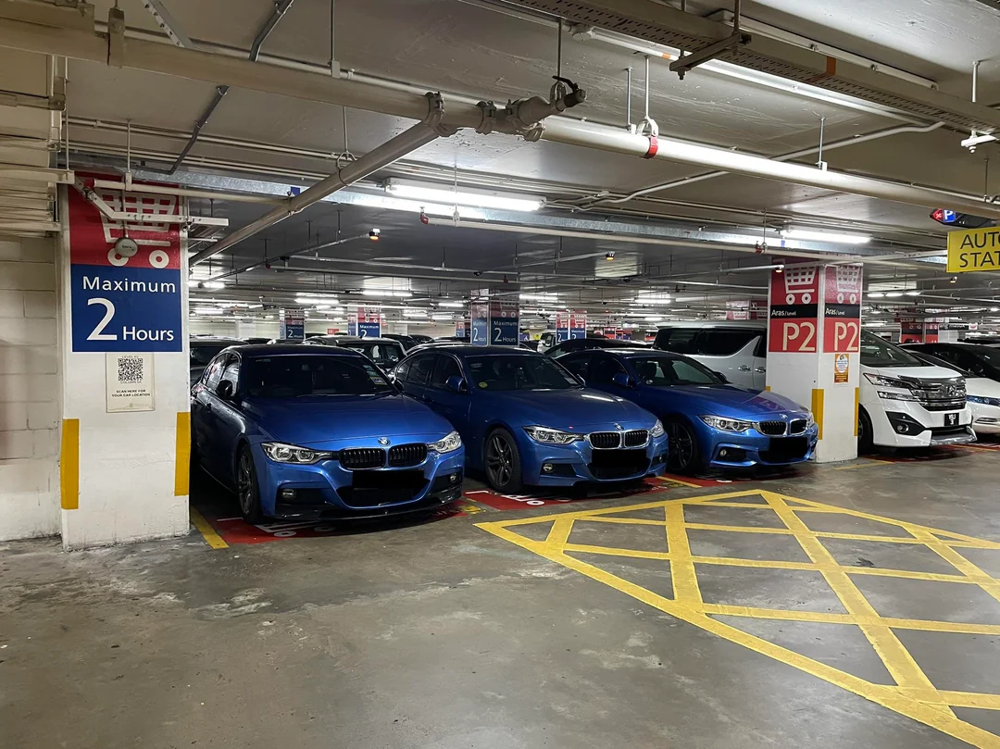
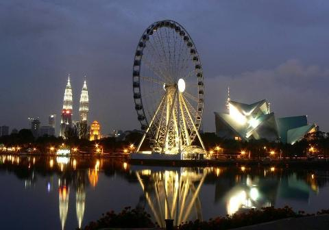

Eco Tracker
Home
About Us
Environment Monitor
Search
Get Directions

KLCC Park
Amenities: Jogging Track, Children's Playground
Get Directions

Taman Tasik Titiwangsa
Amenities: Boat Rides, Jogging Track, Skate Park
Get Directions